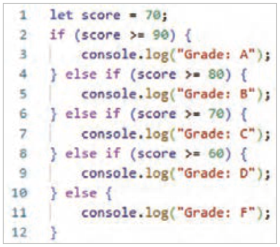

کلمه Condition بهمعنای شرط و کلمه statement به دستور یا دستوراتی اشاره دارد که بهازای برقرار شدن شرط اجرا میشوند. منظور از برقرار بودن شرط این است که مقدار عبارت Condition برابر True باشد. کلمه else بهمعنای «درغیراینصورت» است. محتوای else زمانی اجرا میشود که شرط if برقرار نباشد. یعنی مقدار عبارت condition برابر False باشد.

شکل ۱۰
ساختار else-if: امکان بررسی چند شرط را بهصورت پیدرپی فراهم میکند. در این مرحله رتبه یک دانشآموز بر اساس نمره کسبشده مشخص میشود. در انتهای اسکریپت قبل، کد روبهرو را بنویسید.
در این اسکریپت، متغیر score با مقدار 70 برای نگهداری نمره دانشآموز تعریف شده است. ابتدا شرط score>=90 و سپس شرط score>=80 بررسی میشود. با توجه به اینکه مقدار هر دو شرط نادرست است، بنابراین دستور console.log() در خطوط 3 و 5 اجرا نمیشود. سپس شرط score>=70 بررسی میشود. با توجه به برقرار بودن شرط، دستور شماره 7 اجرا شده و عبارت Grade: C روی صفحه چاپ میشود. بعد از اجرای دستور 7 شرطهای بعدی بررسی نمیشود و کنترل برنامه به خط 13 منتقل میشود.
صفحه ۲۱۲
Page 211
کلمه Condition بهمعنای شرط و کلمه statement به دستور یا دستوراتی اشاره دارد که بهازای برقرار شدن شرط اجرا میشوند. منظور از برقرار بودن شرط این است که مقدار عبارت Condition برابر True باشد. کلمه else بهمعنای «درغیراینصورت» است. محتوای else زمانی اجرا میشود که شرط if برقرار نباشد. یعنی مقدار عبارت condition برابر False باشد.
Figure 10
ساختار else-if: امکان بررسی چند شرط را بهصورت پیدرپی فراهم میکند. در این مرحله رتبه یک دانشآموز بر اساس نمره کسبشده مشخص میشود. در انتهای اسکریپت قبل، کد روبهرو را بنویسید.
در این اسکریپت، متغیر score با مقدار 70 برای نگهداری نمره دانشآموز تعریف شده است. ابتدا شرط score>=90 و سپس شرط score>=80 بررسی میشود. با توجه به اینکه مقدار هر دو شرط نادرست است، بنابراین دستور console.log() در خطوط 3 و 5 اجرا نمیشود. سپس شرط score>=70 بررسی میشود. با توجه به برقرار بودن شرط، دستور شماره 7 اجرا شده و عبارت Grade: C روی صفحه چاپ میشود. بعد از اجرای دستور 7 شرطهای بعدی بررسی نمیشود و کنترل برنامه به خط 13 منتقل میشود.